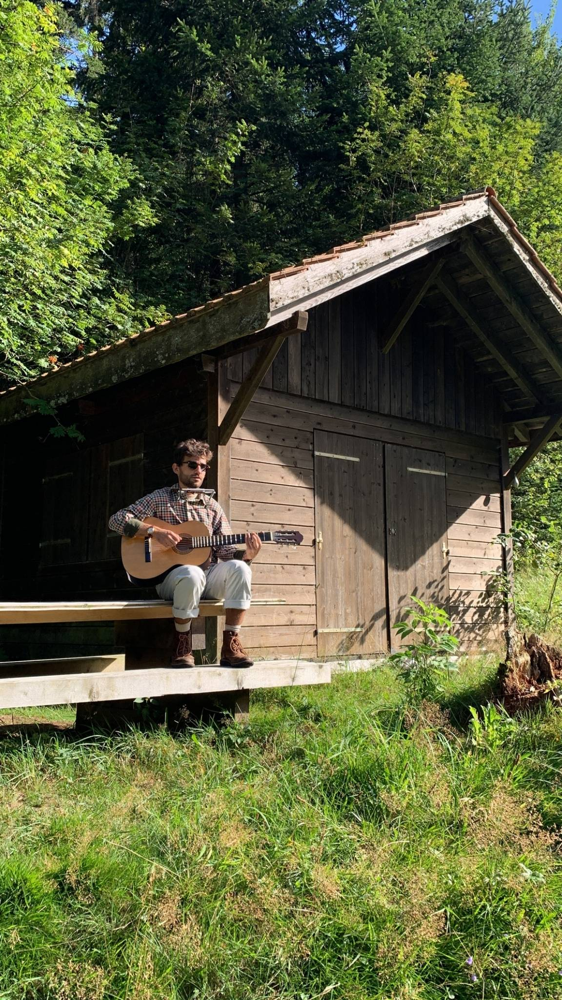

Bio
Folk-Hop producer from Switzerland
I’m C4C (real name Jesse Aymon Dettwiler), a Swiss composer/producer creating Folk-Hop: acoustic lo-fi beats with a folk soul.
Born in France to a Swiss-German father and an Australian mother, I built my sound over the years by blending indie folk textures and organic instruments with lo-fi hip-hop grooves.
Read more Read less
I was born on December 13th, 1997 in France. At 18, I moved to the French-speaking part of Switzerland for military service — a long chapter that shaped me in ways I didn’t expect. I then studied sound design in Lausanne part-time for two years while working restaurant jobs, and for a while I also played music in the street to get by. I’m based in Switzerland today, and in 2024 I married the most wonderful woman.
I didn’t want to, but I started with music early: at six, I learned theory with my brothers and went through ten years of classical training, with the flute as my first instrument. For most of my youth, I hated music — until my teenage years, when I discovered a YouTube video of Bob Dylan at the 1964 Newport Festival. Something clicked. It felt like reconciliation. I taught myself folk guitar and harmonica, became the drummer in a rock band, sold hip-hop instrumentals, and released EDM / future bass projects online. The more I explored, the more music became a passion.
By 2017–2018, I had already released hundreds of pieces on Bandcamp and SoundCloud, but I felt scattered. I wanted a sound that was coherent and truly mine. That’s when I began blending alternative folk textures with boom-bap-leaning instrumentals, building what I would later name “Folk-Hop”. In 2019 I was noticed by record labels, and by respected artists in the scene like Kupla and Leavv.
C4C became serious when I first connected with Chillhop Music. By the end of 2019 I could start living from my music. In early 2020, releasing my debut project L’aventure with Lofi Records (previously ChilledCow Records) was a major step forward. A few months later, I released my first fully independent album and officially named the sub-genre with Folk-Hop, Vol. 1 (including a vinyl edition). Since then, I’ve connected with hundreds of amazing artists, worked with 20+ record labels, and reached 300M+ streams across platforms.
In spring 2025, I founded Folk-Hop Radio: a playlist network built to support new Folk-Hop artists and give the sub-genre the visibility it still rarely gets.
If you’re working on any creative project (video games, films, OSTs, etc.) where you feel this warm acoustic-lo-fi world would fit, don’t hesitate to reach out.

At a glance
- Based Switzerland
- Background French-born · Swiss-German · Australian
- Instruments Folk Guitar · Harmonica · Drums · Ukulele · Kalimba · Flute
- Sound Folk-Hop - Organic Beats - Acoustic Lo-Fi Hip-Hop
My Musical Roots
I was first trained in classical music, which shaped my sense of harmony, structure, and melodic sensitivity from an early age. Over time, I gravitated toward indie folk for its acoustic comfort, organic textures, and emotional honesty.
My faith in Jesus is central to my life. C4C stands for “Creations of Christ”. If my music carries any light or peace, it’s because of Him.
My sound is shaped by nature, silence, and the kind of detail you only notice when you slow down. They are gentle instrumentals made to chill, focus, and drift outside :)

Folk-Hop Radio
I founded Folk-Hop Radio to support and spotlight the artists shaping this organic / anti-AI movement. It’s a growing network across platform created to give Folk-Hop the visibility it deserves.
If you're interested in this sub-style, feel free to follow us on Instagram. We discover new artists every week 🌻
Milestones
Defining moments of my journey as C4C.
What Is Folk-Hop?
Folk-Hop is a sub-genre created by C4C in 2020. It blends acoustic indie folk instrumentation (guitar, ukulele, harmonica, kalimba, flute) with lo-fi hip-hop drum patterns and boom-bap rhythms.
Unlike traditional lo-fi beats, Folk-Hop emphasizes organic textures, human imperfections, and warm acoustic recordings. It stands as a human-made alternative to AI-generated background music.